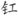

；银灯，泛指灯烛。
；银灯，泛指灯烛。鹧 鸪 天
晏幾道
彩袖殷勤捧玉钟① ，当年拚却醉颜红② 。舞低杨柳楼心月，歌尽桃花扇底风③ 。 从别后，忆相逢，几回魂梦与君同。今宵賸把银

照④ ，犹恐相逢是梦中。
【注释】
①彩袖：指代歌女。玉钟：玉杯。 ②拚却：甘愿之词，犹今言豁出去了。 ③桃花扇：画有桃花的歌扇。歌者手执，作掩口弄姿之用。 ④賸：同“剩”，尽管。银
；银灯，泛指灯烛。
【语译】
当年，你撩起彩袖，手捧玉杯，殷勤地向我劝酒；我甘愿让醉脸通红，喝了一杯又一杯。你翩翩起舞，直跳到杨柳掩映的楼台上月儿西沉；你宛转歌唱，直唱到画着桃花的歌扇已无力摇动。
自从分别以来，我一直在回想着我们相逢的时刻；有多少次，我都梦见与你在一起，你大概也如此吧。今晚我尽管手执灯台将你照了又照，还只怕我们这次的相逢是在梦中呢。
【赏析】
这首脍炙人口的爱情词是晏幾道的代表作。写的是他与一位有恋情的歌女久别重逢的喜悦。
上片回忆从前在宴席上与歌女相聚的欢乐情景。写昔日之欢，在离别词中极普遍，其用意在于对照今日的孤凄；而此词却是一种铺垫，是重逢喜悦的依据，是为今而写昔，以能使人增加对喜悦的理解。“彩袖”句，知是娱客陪饮的歌舞伎。“殷勤捧玉钟”，说她热情劝饮，也暗示她对自己有特殊的情意。“当年”句，点清是回忆，从“拚却醉颜红”补明。“拚却”二字，用得极有表现力，虽是说自己的心态，其实更在为对方着色，说她对自己有不可抗拒的魅力，自己才豁出去不计喝了多少，甘愿让醉脸通红。下两句就写她尽其所能为客献艺。这又从歌女表演历时之久和尽心尽力，反映出与宴者的情绪热烈和兴致甚高。“舞低”二句历来评说颇多，如晁补之称其“不蹈袭人语，风度闲雅，自是一家”，以为仅此二句“知此人必不生于三家邨中者”（《侯鲭录》引）。黄蓼园则以为“比白香山‘笙歌归院落，灯火下楼台’，更觉浓至”（《蓼园词选》）。又有人说它“不愧六朝宫掖体”（《苕溪渔隐丛话》引《雪浪斋日记》），如此等等。我们以为它还汲取了唐人七律对仗的成功经验，颇能从遣词构句上见出锤炼功夫。
下片分两层，先写别后之苦思，是陪衬；后写重逢之惊喜，是主体。“几回魂梦与君同”，又可包含两层意思，“同”，既是“在一起”，又是“相同”。梦能相同，自然是推想之词，但完全合乎情理，女方如何可意料而得，比单单说自己更体贴、深挚。此处说“魂梦”，固表示往昔情景别后常魂系梦萦，但更是为了结句“犹恐相逢是梦中”预先布局，文心极为细密。最后归到“今宵”，重逢之惊喜，俨然如见。这两句当然可以说是出于杜甫《羌邨》诗“夜阑更秉烛，相对如梦寐”，但读来并不觉有因袭之嫌，反而更见其词情婉丽，言同己出。这有个道理，一来意外惊喜，疑为做梦，是人之常情，谁都可以说，故戴叔伦有“翻疑梦里逢”、司空曙有“乍见翻疑梦”之句；二来表述上杜诗晏词各有特色，有微妙的差别，自不相犯，也不能彼此调换。刘体仁说，“此诗与词之分疆也”（《七颂堂词绎》），就说得颇有见地。加了“剩把”、“犹恐”，自是词，不是诗，词比诗就更曲折深婉了，正宜写情人之意外相会而非患难夫妻乱离中的重逢。后来陈师道有《示三子》诗写他与子女们的相见说：“喜极不得语，泪尽方一哂；了知不是梦，忽忽心未稳。”这又是情景相仿而用语翻老杜小晏的案了，但也同样真切深挚。